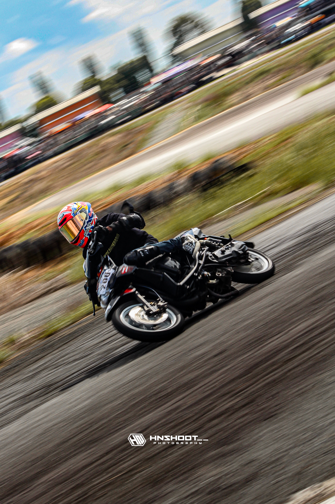

Selamat Datang di Mini-Situs Kami
Halo! Selamat datang di halaman web pribadi yang membahas tentang hobi balap motor road race dan dunia otomotif balap lintasan. Aktivitas ini tidak hanya sekadar memacu kecepatan, tetapi juga melatih fokus, keberanian, dan strategi berkendara di era modern2 ini. Kapasitas mesin motor balap umumnya diukur dalam satuan CC (Cubic Centimeter).
Melalui situs ini, Anda dapat melihat bagaimana konsistensi latihan dan setelan mesin dapat meningkatkan performa pembalap hingga 100% di lintasan sirkuit. Mari jelajahi berbagai menu di atas untuk melihat jadwal kegiatan serta galeri dokumentasi balapan kami.
